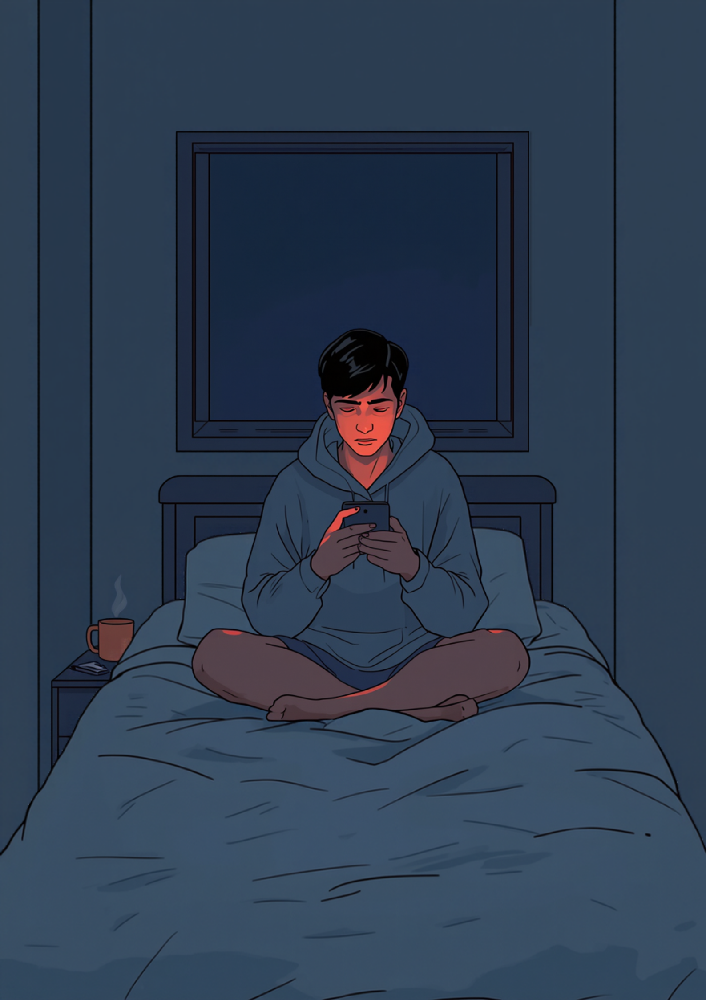
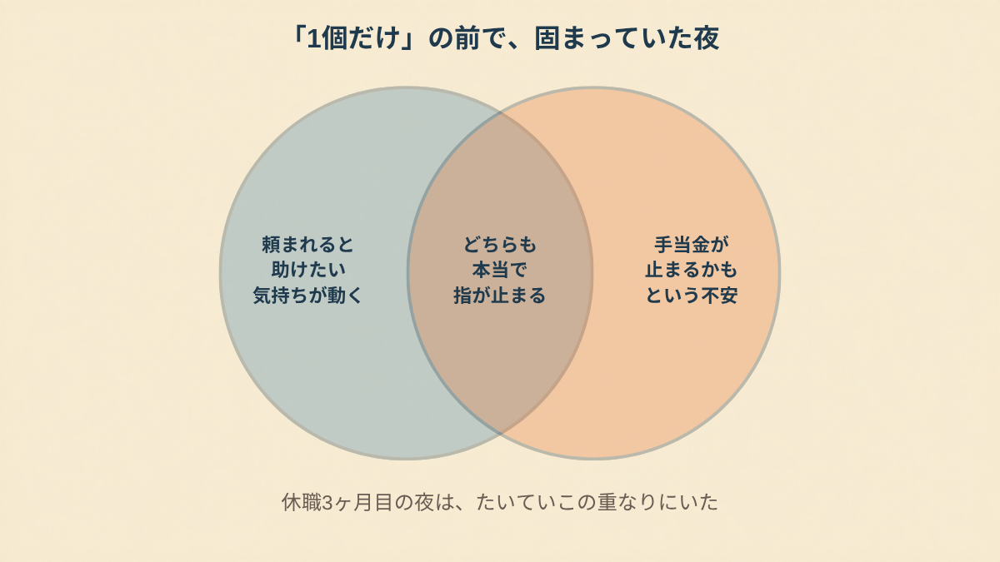
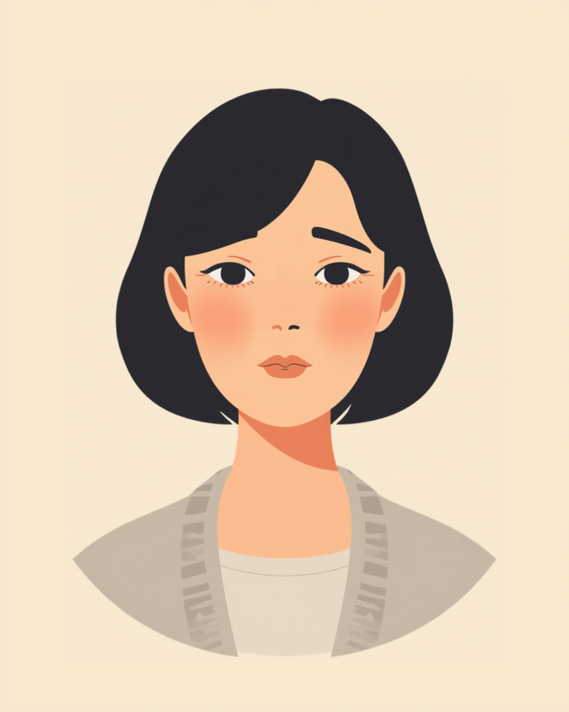
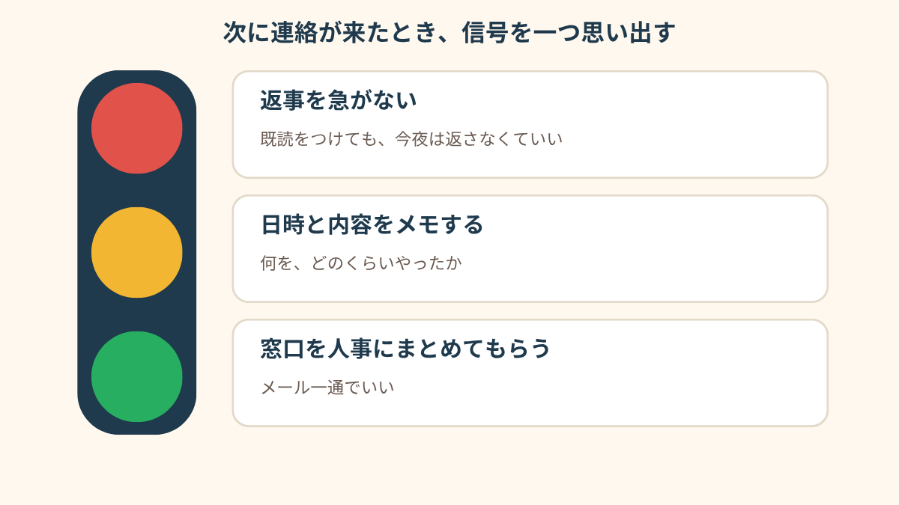

火曜の夜9時すぎ、私用のLINEに、後輩の名前が出た。

火曜の夜9時すぎ、私用のLINEが鳴った
休職して3ヶ月目でした。
経理の部署にいて、31歳。
朝はまだ起きられない日が多くて、夜も9時を過ぎると、もう何もしたくなくなる。そういう時期。
そこに来たのが、同じ部署の後輩からの、LINEでした。
「お疲れさまです。休職中にすみません。取引先Aの請求書コードだけ、教えてもらえませんか」
会社の電話でも、メールでもなくて、プライベートのLINE。
会社からの連絡なら、せめて「会社のもの」って線が引けるのに、友達と同じ画面に、仕事の名前が並んでるのがきつかった。
既読をつけた時点で、もう返信しないという選択肢が消えた気がして。
画面を開いたまま、5分くらい固まって、それから結局、返してしまいました。
「たぶん共有フォルダの2番の中にあるよ」
そしたら、「ありがとうございます！でも見つからなくて…」って返ってきた。
そこから、2時間。
フォルダの名前を思い出して、前に作ったファイルの置き場所を思い出して、「その列じゃなくて右のほう」とか、LINEで説明して。
終わったのは11時すぎでした。
「LINEの通知で、相手の名前を見ただけで、胃がぎゅっとなるんです。内容を見る前から。それがもう、休職してる意味あるのかなって。返すと自分が弱いみたいで、返さないと冷たい人みたいで、結局どっちを選んでも夜眠れなかったです」
「1個だけ」のはずが、翌週には3時間になった
その翌週の月曜、今度は上司から、私用の携帯に着信がありました。
出なかったら、留守電が入っていた。
「月末の締めのことで、ちょっとだけ在宅で見てもらえないかな。急で悪いんだけど」
「ちょっとだけ」。
その言葉が、いちばん怖かった。
折り返して、「わかりました」と言ってしまった。
断る言葉を考える元気が、そもそもなかったんです。
断ったあとに何を言われるか想像するほうが、引き受けるよりも疲れる、そういう感覚でした。
「ちょっとだけ」は3時間でした。
ノートPCを久しぶりに開いて、会社のシステムにログインして、数字を追っているうちに、休職前の頭にすっと戻るのが、自分でも怖かった。
できてしまうんですよね。それも、前より少し遅いだけで、ちゃんとできてしまう。

「ありがとう、助かった」のあとに来たもの
作業が終わって、上司にメールを送ったら、すぐ返事が来ました。
「ありがとう、助かった！」
うれしくない、とは言えなかった。
ほんの少し、役に立てた感じもあった。
でも、パソコンを閉じて10分もしないうちに、頭に浮かんだのが傷病手当金のことでした。
確か「療養のため働けない状態」が条件、って、前に読んだ。
今日の3時間は、働いたことになるんだろうか。
検索して、「休職中 在宅 対応 手当金」って打って、出てきたページを3つ4つ読んで、どれにも「ケースによります」としか書いていなくて、そのまま朝になりました。

「診察で主治医に言えなかったんです。『仕事の連絡が来て…』って。言ったら、元気になったと思われて、休職が打ち切られるんじゃないかって。だから、その月の診察は『だいたい横ばいです』って答えてきました。ほんとのことは、帰りの電車でスマホのメモに書いてました」
3回目は、人事を通してもらった
3週目に、また上司から携帯に着信がありました。
今度は出ないで、画面を伏せた。
手が小刻みに震えてて、それに自分で気づいて、ああこれはもうだめだ、と思った。
その日の午後に、人事の担当の人にメールを書きました。
書いては消して、結局いちばん短い文章にした。
「休職中のため、業務のご連絡は人事を通していただくよう、上司にお伝えいただけませんか」
返信は、翌日の昼。
「あ、そうだったんだ。ごめんね、気をつけるように言っておきます」
軽かった。
軽かったけど、その日から、携帯は鳴らなくなった。
あれほど怖かった、「言う」ということ自体は、メール一通で済んでしまって、拍子抜けした。
手当金のことは、そのあと健保に電話して聞きました。
状況を話して、「どうなりますか」って。
返ってきたのは、「内容と時間を確認して、あらためて判断します」。
その場で白黒はつかなかったけど、黙ったまま抱えているよりは、ずっとましでした。

この記事に、聞いてみたいことはありますか？
「自分の場合はどうなんだろう」と思ったことを、気軽に書いてみてください。いただいた質問は個別にお返事したうえで、匿名で記事にすることがあります。